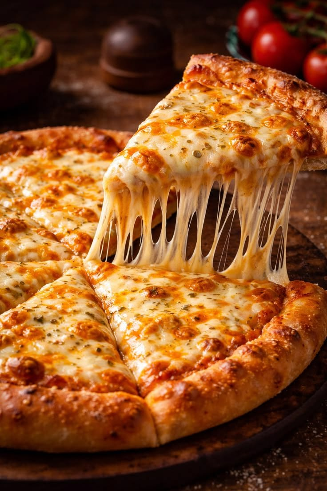

Pizza Recipe

Description
This is the full recipe needed for making a pizza from the start.
There are different types of pizza but this recipe is for the Magherita pizza as it is one of the esiest to make.
Ingredients
- Dough
- Flour
- Pizza or Tomato sauce
- Mozarella cheese
Tools
- Gloves
- Rolling Pin
- Pizza Screen
- Medium sized Ladle
- Hot oven
- Cutter
Steps
- Wash your hands thoroughly with soap and water
- Put on gloves to maintain hygiene
- Tear a handful of dough
- Sprinkle some flour on the dough and use the rolling pin to roll till flat round
- Put the flat rounded dough on the pizza screen to fit all edges
- Fetch a spoonful of pizza or tomato sauce and spread it evenly around the flattened dough
- Flatten the edges of the dough to make it sit on the pizza screen
- Spread Mozarella cheese all around and put it into the hot oven
- After 7 to 8 minutes remove the well cooked oizza and cut into four slices
- Your pizza is ready to serve
Homepage